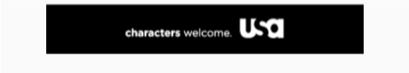

In addition to requesting banner ads added via xml, you can also request a banner ad and add it to the view hierarchy programatically.
Let's use simple FrameLayout as a container for a banner ad you wish to load. This FrameLayout can be described in xml file like this:
<FrameLayout android:id="@+id/frame"
android:layout_width="match_parent"
android:layout_height="wrap_content"/>
Add the following code to your java class corresponding this xml layout:
FrameLayout container = (FrameLayout) findViewById(R.id.frame);
page.getBannerAd("testbanner", container, new MpsAdListener() {
@Override
public void onAdFailedToLoad(@NonNull MPSError mpsError) {
super.onAdFailedToLoad(mpsError);
}
});
Also you can pass additional ad targeting as second parameter to getBannerAd function:
FrameLayout container = (FrameLayout) findViewById(R.id.frame);
Map<String, String> additionalTargeting = new HashMap<>();
additionalTargeting.put("key", "value");
page.getBannerAd("testbanner", additionalTargeting, container, new MpsAdListener() {
@Override
public void onAdFailedToLoad(@NonNull MPSError mpsError) {
super.onAdFailedToLoad(mpsError);
}
});
Result
Congratulations, you’ve successfully made your banner ad request programatically!
